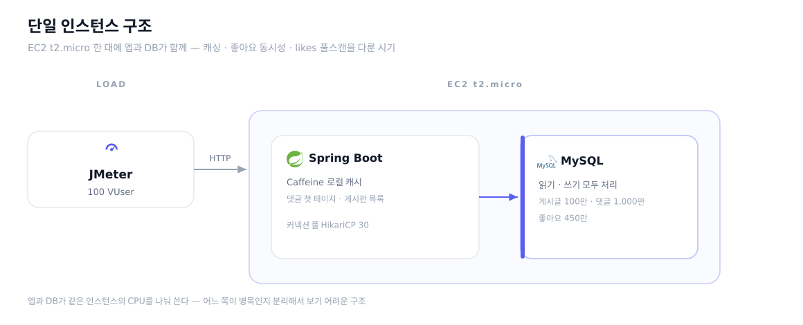
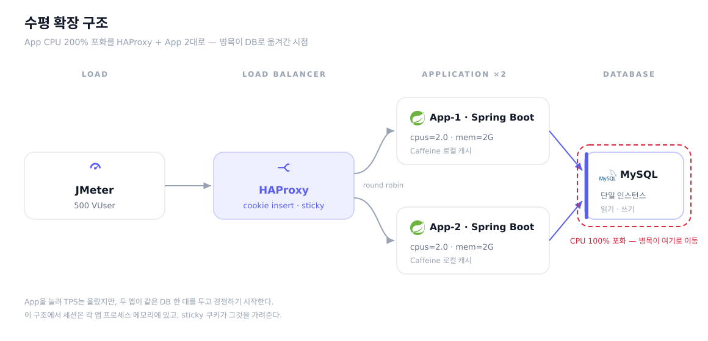
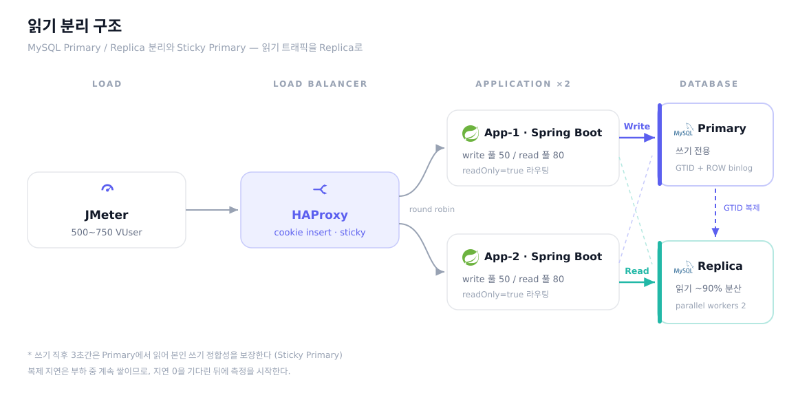
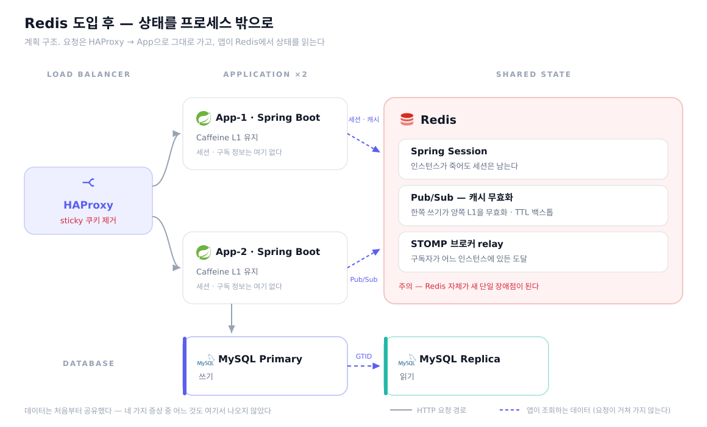

Project Portfolio
Popping-community — 커뮤니티 서비스
테스트 환경: EC2 t2.micro (애플리케이션 + MySQL 공유) · JMeter 100 VUser · DAU 1만 명 가정
데이터 규모: 서비스 성장 시 병목 사전 검증을 위해 게시글 100만 · 댓글 1,000만 · 좋아요 450만 건 적재 (이후 로컬 Docker 리그에서 750 VUser까지 확장)

1. 인기 게시글 댓글 트리 반복 생성으로 응답 지연 발생, 인메모리 캐시(Caffeine) Cache-Aside 패턴 적용으로 댓글 조회 응답시간 152ms → 43ms 및 CTE 실행 횟수 6,642건 → 458건 감소 Blog
Problem
- 게시글 상세 조회 때마다 계층형 댓글 구조 전체를 다시 조립하는 조회가 실행되었고, 인기 게시글에 요청이 몰리면 같은 작업이 반복 실행됨
- JMeter 100 VUser 부하 테스트와 쿼리 로그로 동일한 계층형 조회가 10분간 6,642회 반복 실행되는 것을 확인, 인기 게시글 댓글 조회 응답 시간이 152ms까지 올라감
Analyze
| 검토 방식 | 검토 결과 | 판단 |
|---|
| Write-Through |
커뮤니티 댓글은 새 댓글이 달린 직후 다른 사용자에게 몇 초 뒤에 보여도 사용자 경험에 문제가 없어 즉시 최신 데이터를 보장할 필요가 없는 도메인. 동시 쓰기 시 느린 재조립이 최신 캐시를 덮어쓰는 정합성 문제도 존재 |
기각 |
| 부분 무효화 |
불변 응답 구조를 사용해 일부 노드만 바꿔도 상위 경로 전체를 다시 만들어야 했기 때문에, 부분 갱신의 비용 이점이 거의 없었음 |
기각 |
| Cache-Aside |
댓글 트리 구조는 모든 사용자에게 동일하고 댓글 생성/삭제 시에만 변해 캐시 효율이 높음. 반면 좋아요 수는 수시로 변해 캐시에 넣으면 무효화가 잦아지고, 개인 반응(likedByMe)은 사용자마다 달라 공통 캐시에 넣을 수 없으므로 조회 시점에 별도 합성 |
채택 |
Action
Client → [Application]
↓
cache.get(postId)
├ HIT → 캐시 데이터 반환 + 좋아요/개인 반응 별도 합성
└ MISS → 계층형 조회 1회 실행 → 캐시 저장 → 반환
[댓글 작성/삭제]
↓ DB 커밋 완료
↓ 커밋 이후 후속 처리
↓
cache.evict(postId)
- Cache-Aside 패턴으로 댓글 첫 페이지(page=0)를 postId 키로 캐싱
- 캐시에는 트리 구조만 저장, likeCount·dislikeCount는 조회 시 Comment 테이블 IN절로 합성 → 좋아요 발생 시 캐시 evict 불필요
- 같은 게시글이라도 사용자마다 likedByMe/dislikedByMe가 달라 공통 캐시 단일 반환 불가 → likedByMe=false 고정 저장, 조회 시 현재 사용자의 reaction을 IN() 배치 쿼리 1회로 합성
- 댓글 생성/삭제 트랜잭션 안에서 바로 캐시를 무효화하면 커밋 전에 다른 요청이 이전 상태를 다시 캐시에 올릴 수 있어, 커밋 이후에만 해당 게시글의 댓글 첫 페이지 캐시가 무효화되도록 분리함
- 인기 게시글 수를 500건으로 추정해 캐시 최대 보관 수를 500건으로 설정하고, 만료 시간은 10분으로 설정함. 댓글 생성/삭제 시 즉시 무효화하기 때문에 10분 만료는 변경 없이 조회만 되는 게시글의 최대 보관 기한 역할이며, 너무 짧으면 캐시 히트율이 떨어져 도입 효과가 줄어들기 때문에 여유를 둠. recordStats로 히트율을 Prometheus에 노출해 캐시 효율을 모니터링함
Result
| 인기 게시글 댓글 조회 | 152 ms | → | 43 ms |
| CTE 실행 횟수 (10분) | 6,642건 | → | 458건 |
| 캐시 히트율 | — | → | 평균 ~80% |
JMeter 100 VUser, 10분, 게시글 100만 건·댓글 1,000만 건, EC2 실서버 기준
2. 동시 좋아요 요청 시 유니크 제약 예외 발생, ON DUPLICATE KEY 기반 멱등 처리로 동시 20 VUser 요청에서 예외 0건 달성 Blog
Problem
- 좋아요는 한 사용자가 같은 게시글에 한 번만 누를 수 있도록 유니크 제약을 걸어 두었고, 토글 기반으로 처리하는 구조
- 동시 요청이 들어오면 여러 스레드가 동시에 “좋아요가 없다”고 판단 → insert 경쟁 → 한 요청만 성공, 나머지는 유니크 제약 예외 — 동시성 테스트에서 동일 사용자 20 VUser 동시 요청 시 17건 예외, JMeter 20 VUser 동시 요청에서도 예외 발생 확인
Analyze
| 검토 방식 | 검토 결과 | 판단 |
|---|
| 비관적 락 |
Like row가 없으면 잠글 대상이 없어 Post에 락을 걸어야 함. 인기 게시글이 hot row가 되어 전체 직렬화로 처리량 급감 |
기각 |
예외 무시 후
계속 진행 |
트랜잭션 내부에서 쓰기 실패가 발생하면 이후 로직까지 실패가 전파될 수 있어, 상위 계층에 숨은 실패를 남길 위험이 있었음 |
기각 |
중복 키 기반 삽입
+ 영향 행 수 판정 |
사전 조회 없이 먼저 저장을 시도하고, 중복이면 no-op 처리. 실제 반영 여부를 영향 행 수로 판별해 count를 증감 |
채택 |
Action
// 멱등 삽입: 먼저 저장을 시도하고, 중복이면 변경 없이 종료
INSERT ...
ON DUPLICATE KEY UPDATE id = id;
// 실제로 새 행이 만들어진 경우에만 집계값 증가
if (affectedRows > 0) {
incrementCount(...);
}
- 단순 무시 방식 대신 중복 키 기반 no-op 전략을 선택: 유니크 제약 외의 다른 데이터 오류까지 함께 묻히는 방식을 피하고 싶었음
- MySQL Connector/J는 기본적으로 matched rows를 반환하기 때문에 ON DUPLICATE KEY UPDATE로 중복 처리된 경우에도 affected=1이 돌아와 count가 중복 증가하는 문제가 있었음. JDBC URL에
useAffectedRows=true를 추가해 changed rows 기준으로 전환하여, 실제로 새 행이 만들어진 경우에만 count가 증가하도록 보정함
- 삭제도 DELETE 영향 row 수가 1인 경우에만 count 감소 — 동일한 멱등 구조 적용
Result
| 동일 사용자 JMeter 20 VUser 동시 요청 (ramp 1s) | 유니크 제약 예외 다수 | → | 예외 0건, 멱등 처리 |
- 중복 요청에도 row 생성과 count 증가가 각각 1회만 반영
- 동시성 테스트(20 VUser 동시 실행)로 예외 0건, 멱등 처리 검증 통과
3. likes 450만 건에서 집계+개인화 단일 쿼리 풀스캔으로 응답시간 10초·에러율 15% 발생, 쿼리 분리+비정규화로 응답시간 10,460ms → 167ms·에러율 15.53% → 0% Blog
Problem
- likes 450만 건 적재 후 부하 테스트 → 에러율 15.53%, 평균 응답시간 10,460ms까지 악화
- 좋아요 수 집계와 "내가 좋아요를 눌렀는지" 확인을 같은 조회에서 함께 처리했고, Slow Query Log에서 병목 쿼리를 특정한 뒤 EXPLAIN ANALYZE로 실행계획을 확인한 결과, 조건 순서상 기존 유니크 인덱스를 제대로 활용하지 못해 풀스캔이 발생하는 것을 확인
Before (단일 쿼리)
SELECT COUNT(*), EXISTS(...) ← likes 450만 건 풀스캔
FROM likes
WHERE target_type = ? AND target_id = ? ← target_type: 게시글/댓글 구분, target_id: 대상 ID
↑ 기존 유니크 인덱스의 선두 조건과 맞지 않아 인덱스 범위 탐색이 어려움
Analyze
| 검토 방식 | 검토 결과 | 판단 |
|---|
집계 전용
인덱스 추가 |
에러 즉시 해소(163ms, 에러 0%). 그러나 집계·개인화를 한 쿼리에서 처리하는 구조적 문제를 인덱스로 덮은 것에 불과. 데이터 증가 시 별도 인덱스 유지 비용도 함께 증가 |
한계 |
기존 유니크 인덱스
순서 변경 |
집계 조회와 사용자별 반응 조회의 선두 조건이 달라 인덱스 하나로 두 요구를 모두 만족시키기 어려웠음. 어느 방향이든 별도 인덱스가 추가로 필요 |
기각 |
쿼리 구조 분리 +
비정규화 칼럼 |
집계는 각 테이블의 비정규화 칼럼에서 직접 읽고, 개인화만 사용자 기준 유니크 인덱스를 활용 — 별도 집계 인덱스 없이 해결 가능 |
채택 |
Action
After (분리)
[1] 집계값 ← 각 테이블의 like_count (비정규화 칼럼, 인덱스 불필요)
[2] 개인 반응 ← SELECT ... FROM likes WHERE user_id = ? AND target_id IN (...)
↑ 사용자 기준 유니크 인덱스 활용, 인덱스 범위 탐색
- likeCount는 좋아요 생성/삭제 시 즉시 증감되도록 유지해, 조회 시마다 전체 집계를 다시 계산하지 않게 함
- 비정규화로 인한 count 불일치 위험은 재집계 배치로 보완
Result
| 평균 응답시간 | 10,460 ms | → | 167 ms |
| 에러율 | 15.53% | → | 0% |
JMeter 100 VUser, 10분, likes 450만 건, EC2 실서버 기준. 별도 집계 인덱스 없이 기존 UK만으로 달성
4. App CPU 200% 포화로 TPS 350/s 정체, HAProxy cookie insert 기반 수평 확장(App 2대)으로 TPS 350 → 547/s·응답시간 543ms → 42ms Blog
Problem
- 댓글 트리 최적화로 응답시간은 개선되었지만, App CPU가 2코어 상한(200%)에 도달해 TPS가 350/s에서 더 오르지 않는 것을 500 VUser 부하 테스트에서 확인
- CPU 포화 상태에서 요청이 큐에 대기하면서 평균 응답시간 543ms, p95 2,691ms까지 상승
Analyze
| 검토 방식 | 검토 결과 | 판단 |
|---|
Scale Up
(CPU 증가) |
구성 변경 없이 즉시 효과가 있지만, 단일 장애점이 남고 비용이 급증하며 물리적 한계가 존재 |
한계 |
| Nginx ip_hash |
같은 IP에서 오는 요청만 고정 가능. 부하 테스트처럼 동일 IP에서 다수 스레드가 유입되면 한쪽 인스턴스에 쏠림 |
기각 |
HAProxy
cookie insert |
첫 요청은 라운드 로빈으로 균등 분산하고 응답에 SERVERID 쿠키를 자동 삽입하여 이후 요청은 같은 인스턴스로 고정. Redis 없이 세션 유지 가능 |
채택 |
Action

Before:
Client → App (2cpu/2GB) → MySQL (1cpu/1GB)
After:
Client → HAProxy (LB)
├ cookie SERVERID insert (첫 요청: round-robin → 쿠키 발급)
├ App-1 (2cpu/2GB) → MySQL (1cpu/1GB)
└ App-2 (2cpu/2GB) ↗
- HAProxy의
cookie SERVERID insert indirect nocache로 첫 요청부터 균등 분산 후 쿠키 기반 Sticky Session 적용
- Sticky Session으로 같은 사용자가 항상 같은 인스턴스로 라우팅되므로, 세션 공유용 Redis 없이 기존 Tomcat 세션과 Caffeine 로컬 캐시를 그대로 유지
- Sticky Session의 한계(인스턴스 장애 시 세션 유실)는 인지하되, 현재 단계에서는 복잡도를 낮추는 것을 우선함
Result
| TPS | 350/s | → | 547/s (+56%) |
| 평균 응답시간 | 543 ms | → | 42 ms (-92.3%) |
| P95 응답시간 | 2,691 ms | → | 131 ms (-95.1%) |
JMeter 500 VUser, 10분, 댓글 505만·좋아요 735만 건, 마지막 120초 고정 윈도 기준. Scale Out 후 병목이 App CPU에서 MySQL CPU(100%)로 이동 확인
5. Scale Out 후 MySQL CPU 100% 포화(병목 이동), Read Replica + Sticky Primary(쿠키 3초) 적용으로 응답시간 42ms → 11ms·p99 316ms → 74ms Blog
Problem
- Scale Out 후 병목이 MySQL 단일 인스턴스(CPU 100%)로 이동. 읽기 트래픽이 90%를 차지하는 커뮤니티 특성상 읽기와 쓰기가 한 DB에서 경합
- Read Replica 도입 후에는 부하 중 Replication Lag이 분 단위까지 누적되어, 사용자가 글을 쓴 직후 자신의 글이 보이지 않는 정합성 문제가 존재
Analyze
| 읽기/쓰기 분리 방식 |
|---|
| 검토 방식 | 검토 결과 | 판단 |
|---|
AbstractRouting
DataSource |
트랜잭션 시작 시점에 커넥션을 획득하는데, 이때 readOnly 플래그가 아직 미확정이어서 별도 AOP + ThreadLocal이 필요 (~50줄) |
기각 |
LazyConnection
DataSourceProxy |
커넥션 획득을 첫 SQL 실행까지 지연하므로, readOnly 플래그가 확정된 시점에 자연스럽게 올바른 DataSource로 라우팅. AOP/ThreadLocal 불필요 (~20줄) |
채택 |
| Replication Lag 대응 전략 |
|---|
| 검토 방식 | 검토 결과 | 판단 |
|---|
Semi-sync
Replication |
모든 쓰기에 Replica ACK 대기를 강제하여 쓰기 지연 증가. 커뮤니티처럼 “본인 쓰기만 즉시”이면 전체 일관성은 과잉 |
기각 |
병렬 복제 +
Sticky Primary |
병렬 복제로 Lag 자체를 줄이고, 쓰기 직후 3초간만 Master에서 읽어 “내 글이 안 보이는” 문제만 정확히 해결. 나머지 읽기는 Replica 유지 |
채택 |
Action

Client → HAProxy → App-1/App-2
↓
StickyPrimaryFilter (Cookie → ThreadLocal)
↓
LazyConnectionDataSourceProxy
├ @Transactional → Master (Write)
└ @Transactional(readOnly)
↓
StickyAwareRoutingDataSource
├ sticky=true → Master (쓰기 후 3초간)
└ sticky=false → Replica (평상시)
[쓰기 커밋 완료] → StickyPrimaryAspect.afterCommit()
→ STICKY_PRIMARY=1 쿠키 발급 (maxAge=3s, HttpOnly)
- GTID 기반 Master/Replica 구성. Docker 환경에서 컨테이너 재시작 시 binlog 포지션이 변경되더라도 GTID가 자동 추적하므로 수동 재설정 불필요
LazyConnectionDataSourceProxy로 기존 서비스 코드 변경 없이 @Transactional(readOnly=true) 기반 자동 라우팅 구현. @ConditionalOnProperty로 Replica가 없는 CI/운영 환경에서도 정상 동작- Sticky Primary: 쓰기 트랜잭션 커밋 성공 시
TransactionSynchronization.afterCommit 콜백으로 쿠키 발급. @AfterReturning은 메서드 반환 ≠ 커밋 완료이므로 롤백 시에도 쿠키가 발급될 위험이 있어 기각
- 쿠키 방식을 선택한 이유: 비로그인 게스트도 글 작성이 가능한 서비스이므로 세션 없이도 동작해야 하고, Scale Out 환경에서도 별도 세션 스토어 없이 동작
- 병렬 복제(
replica-parallel-workers=2, LOGICAL_CLOCK)로 같은 group commit에 포함된 트랜잭션을 동시 재생하여 Lag 자체를 감소
Result
| 평균 응답시간 | 42 ms | → | 11 ms (-73.8%) |
| P99 응답시간 | 316 ms | → | 74 ms (-76.6%) |
| Master CPU | 100% (포화) | → | ~25% |
JMeter 500 VUser, 10분, 마지막 120초 고정 윈도 기준. Lag은 병렬 복제(replica-parallel-workers=2)로 완화하되 부하 중 누적 자체는 남아, 본인 쓰기 정합성은 Sticky Primary로 보장
6. 수동 빌드·배포·모니터링으로 반복 시간 소모, GitHub Actions + Jib + Prometheus·Grafana로 배포~모니터링 자동화
Problem
- 빌드, 이미지 생성, 배포, 운영 상태 확인이 모두 수동이어서 코드 수정 후 반영까지 시간이 걸리고 실수 가능성이 높았음
- 성능 개선 작업은 여러 번 빠르게 배포하고 검증해야 하므로, 수동 절차가 문제 해결 속도를 함께 늦추고 있었음
Action
main push
↓
GitHub Actions
├ Gradle build
├ 컨테이너 이미지 생성 → Docker Hub push
└ SSH → EC2 docker-compose up -d
Prometheus → Grafana (모니터링)
- main 브랜치 push 시 빌드, 이미지 생성, 배포가 자동으로 수행되도록 구성
- Prometheus·Grafana로 애플리케이션 메트릭 모니터링 구축
Result
- 코드 수정 이후 수동 작업을 제거하고, 배포 후 운영 지표 확인까지 이어지는 개발-운영 흐름을 자동화
7. 동일 조건 부하테스트가 57%까지 흔들려 효과 검증이 불가능한 문제를 측정 프로토콜로 해결, TTL 캐시 실패(−0.1%)의 원인을 프로파일로 규명해 중복 조회 제거 +4.4%를 순열검정 p=0.05로 검증
Problem
- 최적화 효과를 재려고 동일 이미지·동일 조건으로 2번 돌린 부하테스트가 390/s vs 613/s — 57% 차이. 측정 자체의 흔들림이 재려는 효과보다 커서, 이 상태로는 어떤 최적화도 검증 불가
- 원인 후보를 하나씩 배제 — 캐시 워밍 아님(빠른 런의 히트율이 오히려 낮음 71.8% → 68.1%), 자원 부족 아님(CPU를 덜 쓰며 36% 더 처리). 남은 유력 원인은 JIT 워밍업: 앱이 2코어 상한에 붙어 있어 컴파일러 스레드가 요청 스레드와 경쟁, 600초 내내 처리량이 우상향
Analyze
| 검토 방식 | 검토 결과 | 판단 |
|---|
전 구간 평균으로
계속 비교 |
워밍업 램프가 평균을 오염시키는 것이 분산의 실체 — 같은 데이터를 마지막 구간만 보면 실행 간 차이가 0.8%로 줄어드는 것을 확인 |
기각 |
워밍업 시간만
늘리기 |
600초 1패스로는 안 끝남(1패스 종료 시 JIT 증가율 17.65% → 2패스 후 0.70% 실측). “끝났는지”를 판정하는 게이트 없이는 신뢰 불가 |
한계 |
절차를 스크립트로
고정 + 이중 게이트 |
워밍업 패스는 결과 폐기 + JIT 수렴(2% 이하) 게이트, 본 측정은 마지막 120초 고정 윈도 + STEADY 판정 실패 시 런 폐기. arm당 3회 반복 + ABBA 순서로 시간 편향 상쇄 |
채택 |
Action
- arm 1회 실행 전체(이미지 태그 검증 → 컨테이너 재생성 → 복제 지연 0 대기 → 워밍업 반복 → 본 측정 → 카운터 스냅샷 → STEADY 판정)를 스크립트로 자동화하고, 종료 코드로 “사용 가능한 런”인지 강제
- 검출 한계를 명시적으로 정의: 동일 조건 before arm끼리 4.1% 흔들림 → 그보다 작은 효과는 “미확정”으로 기록하고 주장하지 않음 (앞선 SVG 최적화 +3.4%는 p=0.10이라 실제로 주장을 접었음)
- 프로토콜을 실전 적용: 좋아요 카운트 TTL 3초 캐시가 −0.1%로 실패 → 히트율 15.9%뿐임을 확인하고, 게시글당 요청 간격(4.9~49초)이 TTL보다 길어 캐시가 구조적으로 안 맞는다는 원인까지 규명
- replica의 performance_schema digest로 그 재조회 쿼리가 검사 행의 47.3%(88.7M행)로 1위임을 확인 — 단건 0.39ms로 싼데 매 요청 실행되는 것이 문제. 재귀 CTE가 같은 컬럼을 이미 읽고 있음을 발견해 캐시 미스 경로의 재조회를 생략(같은 트랜잭션의 REPEATABLE READ 스냅샷이라 신선도 손실 0)
Result
| 동일 조건 재현 편차 | 57% | → | ~4% (검출 한계로 정량화) |
| 중복 조회 제거 TPS | 603.0/s | → | 629.5/s (+4.4%, p=0.05) |
| 평균 응답시간 | 370 ms | → | 317 ms (-14.4%) |
| P99 응답시간 | 1,395 ms | → | 1,210 ms (-13.3%) |
JMeter 750 VUser, before/after 각 3 arm ABBAAB, 6런 전부 STEADY·에러 0%. after 최솟값이 before 최댓값보다 높은 완전 분리. digest로 미스 시 재조회 1 → 0건 직접 검증. 폐기한 런과 실패한 실험도 원인과 함께 문서로 기록
8. 인스턴스 장애 시 전원 로그아웃되는 세션 구조를 실패 주입으로 실증, Spring Session Redis 전환 + Sticky Session 제거로 장애 중에도 세션 유지·요청 분산 정확히 50:50 달성
Problem
- 4번의 Sticky Session은 세션·캐시·WebSocket 브로커가 프로세스 안에 있다는 문제를 고친 것이 아니라 가린 것 — 코드만 보고 단정하는 대신, 실제로 깨지는지 실패 주입으로 검증
- 세션: 로그인 후 세션이 붙은 인스턴스를 docker stop → 같은 쿠키 재요청이 302 → /login (docker-compose 배포 시 매번 전 사용자에게 일어나는 일)
- 캐시: app-1에만 댓글 작성 → app-2는 로컬 evict 이벤트를 못 받아 TTL 10분까지 옛 목록 서빙 (31건 vs 30건 실측)
- WebSocket: app-2 구독자에게 app-1 발생 좋아요 전송 → 교차 수신 0건 / 같은 인스턴스 대조군 1건 — 대조군으로 클라이언트 문제가 아니라 브로커(enableSimpleBroker)의 성질임을 분리 증명
Analyze
| 세션을 어디에 둘 것인가 |
|---|
| 검토 방식 | 검토 결과 | 판단 |
|---|
| JWT 무상태 전환 |
커뮤니티는 정지·차단·강제 탈퇴 등 즉시 무효화가 필요한 도메인인데 JWT는 만료 전 회수 불가 — 무효화 목록을 두면 상태가 다시 생겨 세션의 열화판이 됨. SSR이라 토큰도 결국 쿠키에 담아야 해 무상태의 이득 자체가 없음 |
기각 |
| DB 세션 테이블 |
인프라 추가는 없지만, 이미 CPU 포화 상태인 DB에 인증 요청당 조회를 하나 더 얹는 구조 |
기각 |
Sticky 유지 +
세션 복제 |
변경은 가장 적지만 캐시·브로커 문제가 그대로 남고, 무효화가 필요한 나머지 상태에 대한 답이 아님 |
한계 |
Spring Session
Redis |
세션만이 아니라 캐시 무효화(Pub/Sub)·WebSocket 브로드캐스트의 인스턴스 간 복제까지 같은 인프라로 확장 가능. 요청당 추가 비용은 HGETALL 1회 0.004ms로 실측 |
채택 |
Action

- 의존성을 올리는 것만으로 모든 환경의 세션이 Redis로 전환되는 문제를 확인 — Redis가 없으면 "앱은 뜨는데 세션을 쓰는 요청만 500"이 된다. 처음 넣은
spring.session.store-type: none 안전 기본값은 검증해보니 작동하지 않았다: Boot 3.x에서 제거된 속성이라 무시되고 클래스패스만으로 전환된다. SessionAutoConfiguration을 배제하고 app.session.store=redis일 때만 켜지도록 다시 만들어, opt-in 없이 Redis를 내려도 로그인이 정상 동작함을 확인(500 → 302)
- Redis는
maxmemory 192mb + noeviction — 세션 저장소에서 축출은 "사용자가 조용히 로그아웃되는" 장애이므로, 메모리 압박 시 쓰기 거부가 낫다고 판단
- HAProxy에서
cookie SERVERID insert 제거 → 요청 단위 round robin 복원
- 이전 과정에서 발견 1: 세션을 열어보니 BCrypt 해시가 실려 있었음(DB 해시 조각과 대조로 확인).
CredentialsContainer로 인증 직후 소거 — 인증 토큰에서 principal까지 소거가 연쇄되는지를 테스트로 고정 (세션 내 해시 검출 1 → 0건)
- 이전 과정에서 발견 2: Redis 클라이언트 추가로 Metaspace OOM(에러 98%)이 터져 추적 → 이미지에 박힌 jvmFlags가
JAVA_TOOL_OPTIONS를 계속 이기고 있었음을 발견하고 관련 문서를 사실대로 정정
- 전체 A/B 부하테스트는 의도적으로 생략 — 인증 요청 비중 31% × 왕복 0.2ms ≈ 기대 효과 0.02%로 이 부하 모델의 검출 한계(약 4%)의 1/200이라 산술로 결론이 남. 대신 용량·분산·에러만 1패스로 검증
Result
| 인스턴스 정지 후 같은 쿠키 | 302 → /login | → | 200 OK (10회 연속) |
| 요청 분산 (sticky 제거) | 인스턴스 고정 | → | 118,094 / 118,094 (50.0%) |
| 세션 내 BCrypt 해시 | 검출 1건 | → | 0건 |
| 검증 부하테스트 에러율 | — | → | 0% (235,103 샘플) |
JMeter 750 VUser, 10분, 로컬 Docker 리그. Redis 부하 초당 550 명령으로 한계 대비 여유. 캐시 무효화 Pub/Sub·WebSocket 브로드캐스트 복제는 다음 단계
PoppingOps — 백엔드 운영 모니터링·장애 알림 자동화
1. 로컬 PC 의존 모니터링으로 PC 종료 시 감시 불가, Railway 컨테이너 기반 SSH 메트릭 수집으로 최대 10분 이내 자동 알림 전환
Problem
- t2.micro에서 애플리케이션과 MySQL만으로도 리소스가 빠듯해 Prometheus + Grafana를 EC2에 함께 띄우기 어려워 로컬 PC에서 모니터링
- PC를 끄면 모니터링과 알림이 함께 중단되는 구조
Action
Railway Container
└─ health-check.sh ── SSH ── EC2 actuator/node-exporter/mysqld-exporter
├─ 10분 snapshot 저장
├─ counter delta 기반 트래픽 지표/응답시간/에러율 계산
├─ 임계값 기반 상태 전이 감지 (Memory ≥80% WARN, ≥95% CRITICAL 등)
└─ Discord Webhook 알림 + 대응 조치 매뉴얼(JSON runbook) 기반 권장 조치
- SSH로 actuator, node-exporter, mysqld-exporter 메트릭을 10분마다 수집해 snapshot으로 저장
- 이전 snapshot 대비 counter delta로 트래픽 지표, 평균 응답시간, 에러율을 계산 — 첫 수집처럼 이전 sample이 없는 경우 rate 수치를 계산 대기로 처리해 오탐 방지
- WARN·CRITICAL·복구 상태 전이 발생 시 Discord Webhook으로 즉시 알림
Result
| 장애 인지 소요시간 | 수동 확인 (PC 종료 시 불가) | → | 최대 10분 이내 자동 알림 |
2. 모든 감지에 AI 사용으로 비용 반복·장애 전파, 정기 감지는 규칙 기반 스크립트로 분리하고 AI는 해석·요약에만 호출하여 정상 상태 AI 비용 0원 유지 및 AI 장애 시에도 감지 동작
Problem
- 모든 감지와 판단을 AI 모델로 처리하면 10분마다 호출 비용이 소비되고, 모델 제공자 장애 시 모니터링 핵심 경로가 함께 흔들림
- 알림 발생 시 권장 조치도 매번 AI를 호출하면 비용과 응답 지연이 누적
Analyze
| 검토 방식 | 검토 결과 | 판단 |
|---|
모든 감지를
AI 모델로 처리 |
정상 상태에서도 매 10분마다 호출 비용이 발생하고, 제공자 장애가 곧 모니터링 장애로 이어짐. 임계값 비교 같은 단순 판단에 AI는 과잉 |
기각 |
권장 조치를
매번 AI 호출 |
같은 종류·심각도의 알림마다 같은 권장 조치를 반복 생성. 알림 지연 발생 |
기각 |
임계값 기반 상태 판단 +
대응 조치 매뉴얼 우선 +
AI는 해석에만 |
정기 메트릭 수집과 임계값 비교는 스크립트가 처리하고, 권장 조치는 대응 조치 매뉴얼(JSON runbook)을 우선 적용하며, AI는 사용자 질문·리포트 작성·매뉴얼 미매칭 fallback처럼 해석이 필요한 경우에만 사용 |
채택 |
Action
Detection Layer (Bash, AI 없음)
└─ health-check.sh: 임계값 비교 → 상태 전이 감지
↓
State Layer (snapshot)
└─ /tmp/health-check-alerts/status-current.env
↓
Recommendation Layer (대응 조치 매뉴얼, AI 없음)
└─ JSON runbook: 알림 종류·심각도별 권장 조치 우선 적용
└─ 미매칭 시에만 AI fallback
↓
Analysis Layer (AI, 필요 시에만)
└─ Daily Summary(9AM) / Full Report(6시간) / 사용자 질문
↓
Notification Layer
└─ Discord Webhook
- 정기 감지와 기본 장애 알림은 Bash 임계값 기반으로 처리해 정상 반복 체크의 AI 비용을 0원으로 유지했고, AI 장애 시에도 감지와 알림은 계속 동작
- 대응 조치 매뉴얼(JSON runbook)에 정의한 알림 종류·심각도별 권장 조치를 우선 적용하고, 예외적인 알림만 AI fallback으로 처리
- AI는 사용자 질문, Daily Summary·Full Report 작성, 대응 조치 매뉴얼에 직접 절차가 없는 알림의 fallback처럼 해석이 필요한 구간에만 사용해 수집·판단 경로와 분석 경로를 분리
- Full Report는 helper가
full_report_should_report=true로 판단한 경우에만 AI를 호출하고, 변화가 없으면 생략
Result
| 정상 상태 토큰 비용 | 매 10분마다 소비 | → | 0원 (bash 처리) |
| 권장 조치 경로 | 매번 AI 호출 | → | 대응 조치 매뉴얼 우선, 미매칭만 AI fallback |
| AI 제공자 장애 시 | 핵심 감지 경로 영향 | → | 감지·1차 알림은 계속 동작 |
3. 모니터링 장애 시 정상으로 오인 위험, 유형별 실패 추적 + snapshot freshness 검증으로 “서버 장애”와 “감지 불능” 분리 알림
Problem
- 모니터링 시스템 자체에 장애가 발생하면(SSH 끊김, exporter 응답 없음 등) 알림이 오지 않아 “정상”으로 오인할 수 있음
- 오래된 snapshot을 최신 상태로 보고하거나, exporter 누락으로 불완전한 데이터를 그대로 전달할 위험
Analyze
- SSH 실패, 메트릭 파싱 실패, 필수 메트릭 누락, 스냅샷 쓰기 실패 등 파이프라인 단계별로 장애 유형이 다르므로 유형별 추적이 필요
- 일시적 네트워크 지연과 실제 장애를 구분하려면 단일 실패로 즉시 알림하면 안 됨 — 연속 실패 카운트 기반 판단 필요
- snapshot 측정 시각 기반 freshness 판정이 없으면 stale data를 현재 상태로 오인하게 됨
Action
health-check.sh / heartbeat-context.sh
├─ SSH 연결 확인 → 실패 시 연결 실패 카운트 증가
├─ 메트릭 수집/검증 → 파싱 실패 또는 필수 값 누락 시 resource_parse 카운트 증가
└─ snapshot 저장 → 저장 실패 시 snapshot_write 카운트 증가
[유형별 2회 연속 실패] → "모니터링 장애 알림"
snapshot freshness 판정
├─ <20분: OK
├─ 20~30분: WARN (오래됨)
└─ >30분: CRITICAL (수집 중단 가능성)
필수 메트릭/핵심 값 검증
├─ app/node/mysql metrics 누락
├─ 핵심 값 비어 있음/0 이하
└─ 위 경우 모두 resource_parse로 처리하고 snapshot 갱신 중단
- 파이프라인 각 단계의 실패를 유형별로 추적, 동일 유형 2회 연속 실패 시 “모니터링 장애” 알림 발송 — 일시적 네트워크 지연과 실제 장애 구분
- snapshot freshness 검증으로 오래된 데이터를 현재 상태로 오인하는 문제 방지
- 필수 메트릭 누락 검증으로 불완전한 snapshot이 리포트에 포함되지 않도록 차단
Result
| 장애 유형 구분 | 서버/모니터링 장애 미구분 | → | "서버 장애" vs "감지 불능" 분리 알림 |
| stale data 오인 | 오래된 snapshot을 현재로 사용 | → | freshness 검증 (20분/30분 임계) |
| 불완전 데이터 | exporter 누락 시 그대로 전달 | → | 필수 메트릭 검증 후 차단 |
FINNA — 루틴 관리 서비스
1. 수동 API 명세 공유로 프론트엔드와 명세 불일치·재작업 발생, Spring REST Docs로 테스트 통과 시에만 문서 생성되는 자동화 파이프라인 구축
Problem
- API 명세를 수동으로 공유하다 보니 프론트엔드 팀원이 변경 전 명세로 작업해 재작업이 발생한 적이 있었음
Analyze
- Swagger는 런타임 스캔 기반이라 빌드 시점에 문서 정합성을 검증할 수 없고, 문서용 어노테이션이 프로덕션 코드에 섞여 유지보수 부담이 발생
- Spring REST Docs는 테스트 통과 시에만 문서가 생성되므로 "문서 = 검증된 최신 상태"를 구조적으로 보장할 수 있음
Action
테스트 코드 작성
↓
./gradlew test
↓
asciidoctor (snippets → HTML 문서)
↓
copyDocument (static/docs에 배치)
↓
테스트 통과 시에만 문서 갱신 → 문서 = 항상 최신 상태
- Spring REST Docs를 활용해 테스트 결과를 기반으로 API 문서가 생성되도록
test → asciidoctor → copyDocument 파이프라인 구성
- 테스트 통과 시에만 문서가 생성되도록 만들어 문서 = 항상 최신 상태를 보장하고, 문서용 설정이 프로덕션 코드에 과하게 스며들지 않도록 분리
- 인증 사용자 시나리오를 테스트 환경에서 일관되게 재현해, 인증이 필요한 API도 실제 동작과 가깝게 문서화
Result
- 테스트와 문서가 강하게 연결된 문서화 체계 구축
- 프로덕션 코드 오염 없이 API 문서 신뢰도 확보